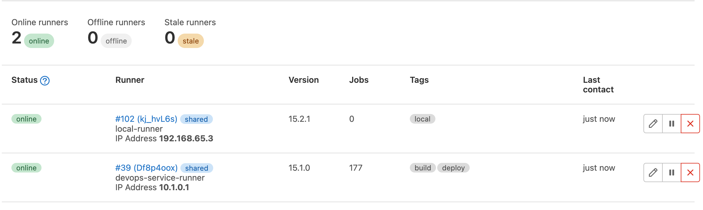
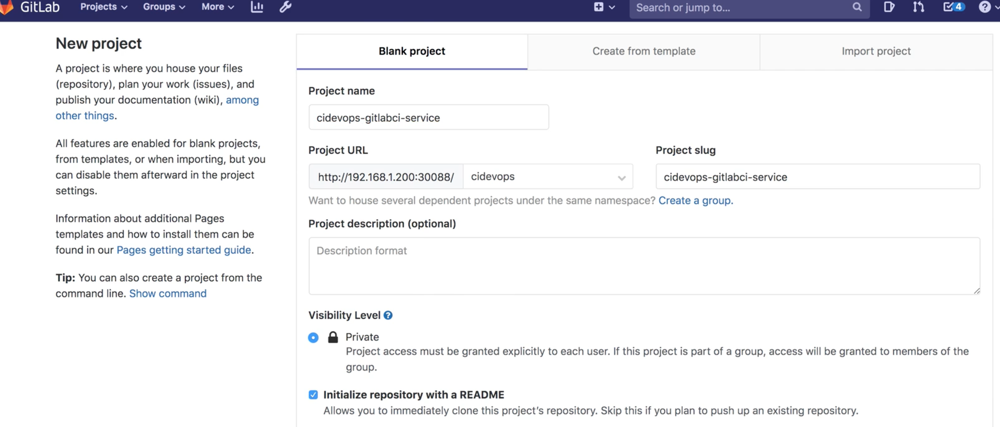
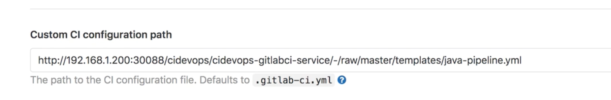
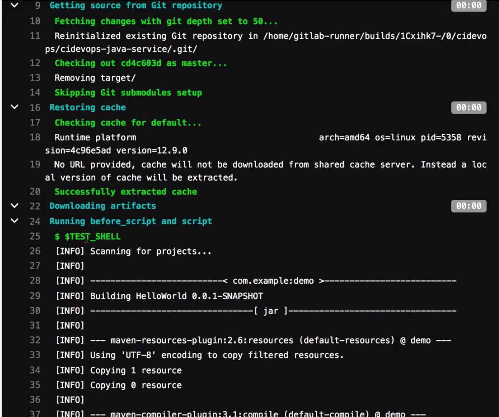
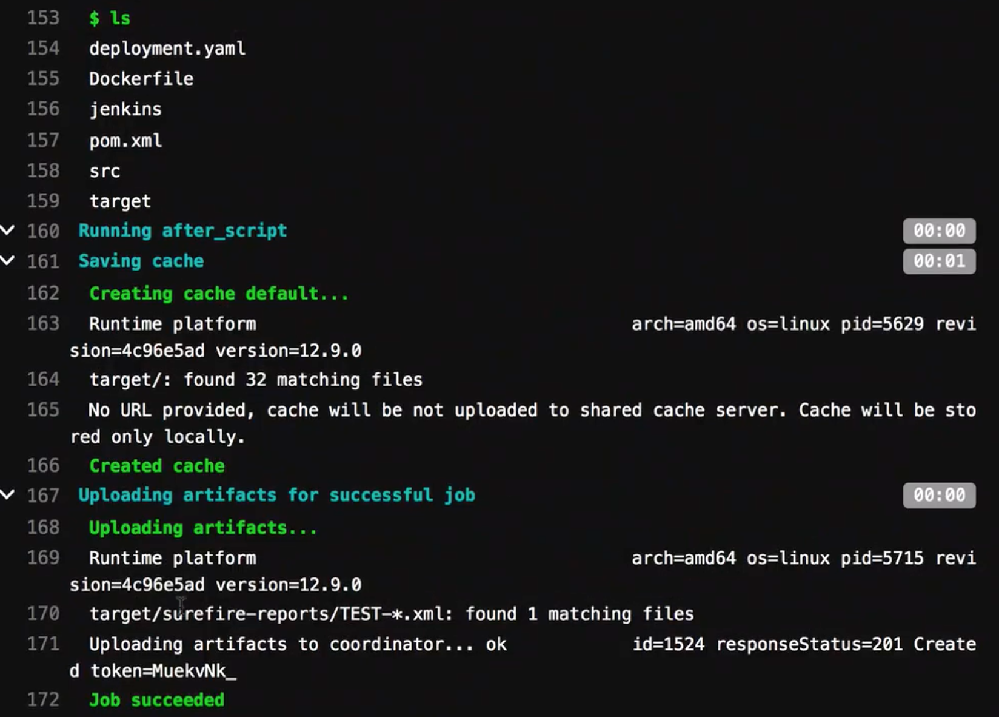
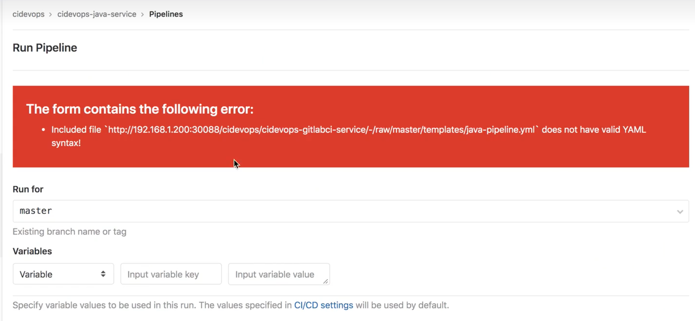
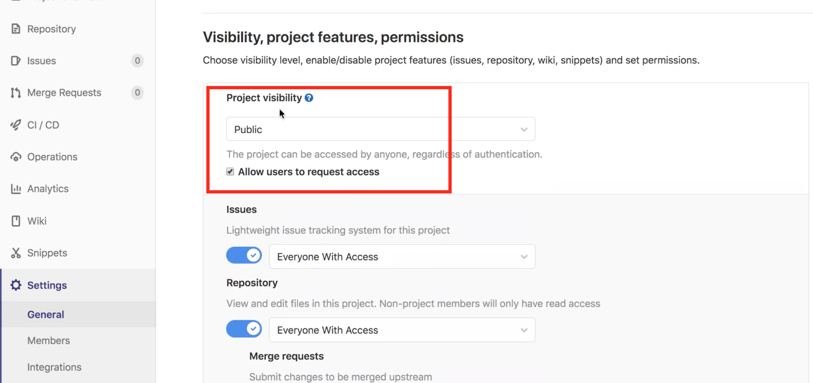
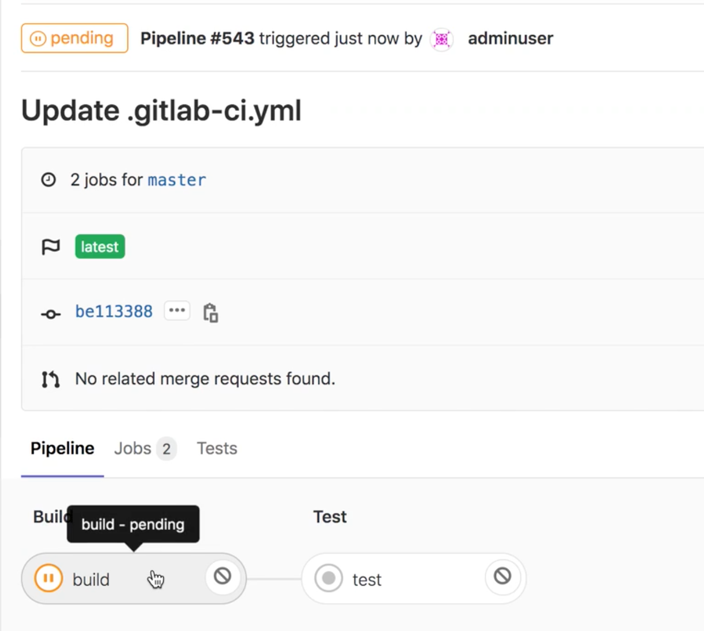
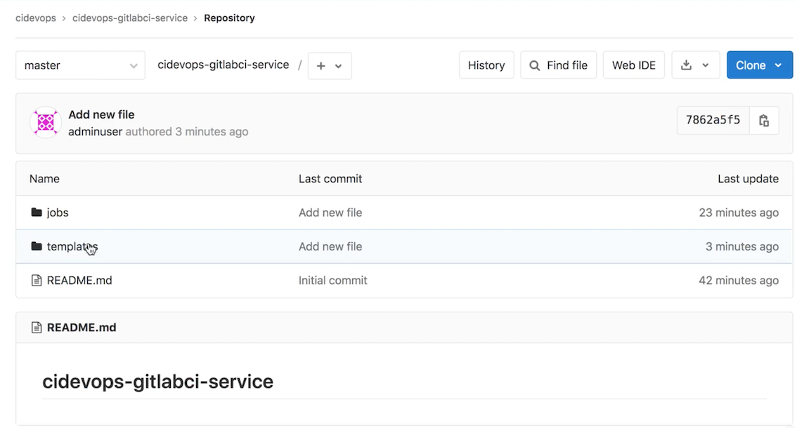
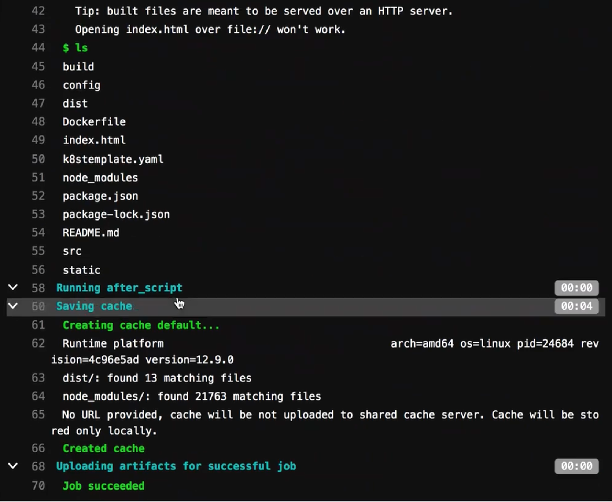

1 模板库设计Maven+NPM
MacOS install gitlab-runner
sudo curl --output /usr/local/bin/gitlab-runner "https://gitlab-runner-downloads.s3.amazonaws.com/latest/binaries/gitlab-runner-darwin-amd64"
sudo chmod +x /usr/local/bin/gitlab-runner
su - <username>
cd ~
gitlab-runner install --working-directory=~/k8s_test/gitlab/gitlab-runner
gitlab-runner start
$ gitlab-runner start
Runtime platform arch=amd64 os=darwin pid=87643 revision=32fc1585 version=15.2.1
gitlab-runner register --non-interactive --executor shell --url http://127.0.0.1:32220/ --registration-token "nzTshoYwsnCttkyzZBxE" --description "local-runner" --tag-list "local" --run-untagged="true" --locked="false" --access-level="not_protected"
$ gitlab-runner register --non-interactive --executor shell --url http://127.0.0.1:32220/ --registration-token "nzTshoYwsnCttkyzZBxE" --description "local-runner" --tag-list "local" --run-untagged="true" --locked="false" --access-level="not_protected"
Runtime platform arch=amd64 os=darwin pid=88396 revision=32fc1585 version=15.2.1
WARNING: Running in user-mode.
WARNING: Use sudo for system-mode:
WARNING: $ sudo gitlab-runner...
Registering runner... succeeded runner=nzTshoYw
Runner registered successfully. Feel free to start it, but if it's running already the config should be automatically reloaded!
Configuration (with the authentication token) was saved in "/Users/i515190/.gitlab-runner/config.toml"
$ gitlab-runner verify
Runtime platform arch=amd64 os=darwin pid=88442 revision=32fc1585 version=15.2.1
WARNING: Running in user-mode.
WARNING: Use sudo for system-mode:
WARNING: $ sudo gitlab-runner...
Verifying runner... is alive runner=kj_hvL6s

Install maven-docker gitlab-runner
gitlab-runner register --non-interactive \
--executor="docker" \
--custom_build_dir-enabled="true" \
--docker-image="maven:latest" \
--url="http://127.0.0.1:32220/" \
--registration-token="nzTshoYwsnCttkyzZBxE" \
--description="docker-runner" \
--tag-list="docker" \
--run-untagged="true" \
--locked="false" \
--docker-network-mode="gitlabnetwork" \
--cache-dir="/cache" \
--docker-disable-cache="true" \
--docker-volumes="gitlab-runner-builds:~/k8s_test/gitlab/gitlab-runner" \
--docker-volumes="gitlab-runner-cache:~/k8s_test/gitlab/gitlab-runner" \
--docker-privileged="true" \
--docker-volumes="/var/run/docker.sock:/var/run/docker.sock"
模板库设计
为了实现模板复用，减少重复代码。本次课程开始我们将使用模板库来完成流水线。开始之前还是要把语法学好便于进一步实施。
创建一个git仓库用于存放模板demo/demo-gitlabci-service ，然后创建一个template目录存放所有pipeline的模板，创建一个jobs目录存放job模板。

这样我们可以将一些maven、ant、gradle、npm工具通过一个job模板和不同的构建命令实现。
templates的好处是我们在其中定义了模板流水线，这些流水线可以直接让项目使用。当遇到个性化项目的时候就可以在当前项目创建.gitlab-ci.yml文件来引用模板文件，再进一步实现个性化需要。
- 创建一个git仓库用于存放模板
- 创建一个template目录存放所有pipeline的模板
- 创建一个jobs目录存放jiob模板。
创建一个Project URL / Project slug
- cidevops
- cidevops-gitlabci-service

工具链集成-构建工具集成
内容大纲
- 后端项目Maven集成
- 前端项目Npm集成
集成构建工貝
构建工具是用来将代码编译打包成制品的工具。
例如前端项目我们一般使用npm进行打包，后端Java项目我们一般使用maven、gradle进行打包。
构建工具很多很多，但是集成到gitlab中是一样的。所以这里简单介绍使用gitlabCI集成npm/maven完成前后端项目的构建。
软件包下载
- maven软件包下载
- gradle软件包下载
- ant软住包下载
- node软件包下载
环境配置
首先，我们需要在runner机器中安装配置好apache-maven。
#解压
tar zxf apache-maven-xxxx.tar.qz -C /usr/local
tar zxf gradle-xxxx.tar.gz -C /usr/local
tar zxf node-xxxxx.tar.gz -C /usr/local
tar zxf apache-ant-xxxx.tar.gz -C /usr/local
#添加环境变量
vim /etc/profile
export MAVEN_HOME=/usr/local/apache-maven-3.6.0
export ANT_HOME=/usr/local/apache-ant-1.10.5
export GRADLE_HOME=/usr/local/gradle-5.3
export NODE_HOME=/usr/local/node-v10.15.3-linux-x64
export JAVA_HOME=/usr/local/jdk1.8.0_201
export PATH=$PATH:$MAVEN_HOME/bin:$ANT_HOME/bin:$GRADLE_HOME/bin:$NODE_HOME/bin
export PATH=$PATH:$JAVA_HOME/bin
＃ 生效全局环境变量
source /etc/profile
mvn -v
Apache Maven 3.6.3 (cecedd343002696d0abb50b32b541b8a6ba2883f)
Maven home: /usr/local/buildtools/apache-maven-3.6.3
...
Maven集成
- 环境基础配置
- 创建build作业模板
https://github.com/zeyangli/gitlabci-templates
- jobs : 作业模板目录
- template : 流水线模板目录
jobs/
--- build.yml
--- codeanalysis.yml
--- test.yml
templates/
--- java-pipeline.yml
--- k8s-java-pipeline.yml
web-pipeline.yml
使用方法
- 标准模板： 系统设置 -> CICD -> General pipelines -> Custom CI configuration path
- 个性化： 使用include引入模板文件，进行自定义参数控制。
gitlabci-templates/jobs/build.yml
我们首先在jobs目录中创建一个build.yml，然后在里面编写build作业模板。
.build:
stage: build
tags:
- build
script:
- $BUILD_SHELL
- ls
gitlabci-templates/jobs/test.yml
我们计划将测试相关的job都定义在jobs/test.yml中，我们开始创建并编写test作业。运行测试shel并收集单元测试报告。
#单元测试
.test:
stage: test
tags:
- build
script:
- $TEST_SHELL
- ls
artifacts:
reports:
junit: ${JUNIT_REPORT_PATH}
gitlabci-cidevops-java-service
demo-gitlabci-service/templates/java-pipeline.yml
include:
- project: 'cidevops/cidevops-gitlabci-service'
ref: master
file: 'jobs/build.yml'
- project: 'cidevops/cidevops-gitlabci-service'
ref: master
file: 'jobs/test.yml'
- project: 'cidevops/cidevops-gitlabci-service'
ref: master
file: 'jobs/codeanalysis.yml'
variables:
BUILD_SHELL: 'mvn clean package -DskipTests' ##构建命令
CACHE_DIR: 'target/'
TEST_SHELL : 'mvn test' ##测试命令
JUNIT_REPORT_PATH: 'target/surefire-reports/TEST-*.xml' ##单元测试报告
# 代码扫描
SCANNER_HOME : "/usr/local/buildtools/sonar-scanner-3.2.0.1227-linux"
SCAN_DIR : "src"
ARTIFACT_PATH : 'target/*.jar' ##制品目录
#上传制品库
ARTIFACTORY_URL: "http://192.168.1.200:30082/artifactory"
ARTIFACTORY_NAME: "cidevops"
TARGET_FILE_PATH: "$CI_PROJECT_NAMESPACE/$CI_PROJECT_NAME/$CI_COMMIT_REF_NAME-$CI_COMMIT_SHORT_SHA-$CI_PIPELINE_ID"
TARGET_ARTIFACT_NAME: "$CI_PROJECT_NAME-$CI_COMMIT_REF_NAME-$CI_COMMIT_SHORT_SHA-$CI_PIPELINE_ID.jar"
#构建镜像
CI_REGISTRY: 'registry.cn-beijing.aliyuncs.com'
CI_REGISTRY_USER: '610556220zy'
#CI_REGISTRY_PASSWD: 'xxxxxxxx.'
IMAGE_NAME: "$CI_REGISTRY/$CI_PROJECT_PATH:$CI_COMMIT_REF_NAME-$CI_COMMIT_SHORT_SHA-$CI_PIPELINE_ID"
DOCKER_FILE_PATH: "./Dockerfile"
cache:
paths:
- ${CACHE_DIR}
stages:
- build
- test
- parallel01
- down_artifact
build:
stage: build
extends: .build
rules:
- when: on_success
test:
stage: test
extends: .test
rules:
- when: on_success
code_analysis:
stage: parallel01
extends: .codeanalysis-java
codeanalysis_mr:
stage: parallel01
extends: .codeanalysis-mr
deploy_artifact:
stage: parallel01
extends: .deploy-artifact
down_artifact:
stage: down_artifact
extends: .down-artifact
build_image:
stage: parallel01
extends: .build-docker
https://github.com/zeyangli/gitlabci-cidevops-java-service
gitlabci-cidevops-java-service/.gitlab-ci.yml
include:
- project: 'cidevops/cidevops-gitlabci-service'
ref: master
file: 'jobs/build.yml'
# file: 'templates/k8s-java-pipeline.yml'
- project: 'cidevops/cidevops-gitlabci-service'
ref: master
file: 'jobs/test.yml'
variables:
BUILD_SHELL: 'mvn clean package -DskipTests'
CACHE_DIR: 'target/'
TEST_SHELL: 'mvn test' ##测试命令
JUNIT_REPORT_PATH: 'target/surefire-reports/TEST-*.xml' #单元测试报告
cache:
paths:
- ${CACHE_DIR}
stages:
- build
- test
build:
stage: build
extends: .build
build:
stage: test
extends: .test



解决远程使用YAML的问题

将 Template 的 被引用的Repo 改为 Public

Building Processed

NPM 构建工具集成

环境基础配置
确保Node已经安装好
npm -v
6.13 4
扩展模板库前端代码
demo-gitlabci-service/templates/
demo-gitlabci-service/templates/web-pipeline.yml
include:
- project: 'cidevops/cidevops-gitlabci-service'
ref: master
file: 'jobs/build.yml'
variables:
BUILD_SHELL: 'npm run build' ##构建命令
CACHE_DIR : "dist/" ##构建缓存
cache:
paths:
- ${CACHE_DIR}
- node_modules/
stages:
- install
- build
install:
stage: install
script:
- 'npm install'
build:
stage: build
extends: .build
运行Pipeline
http://127.0.0.1: 32220/cidevops/cidevops-gitlabci-service/-/raw/master/templates/web-pipeline.yml
